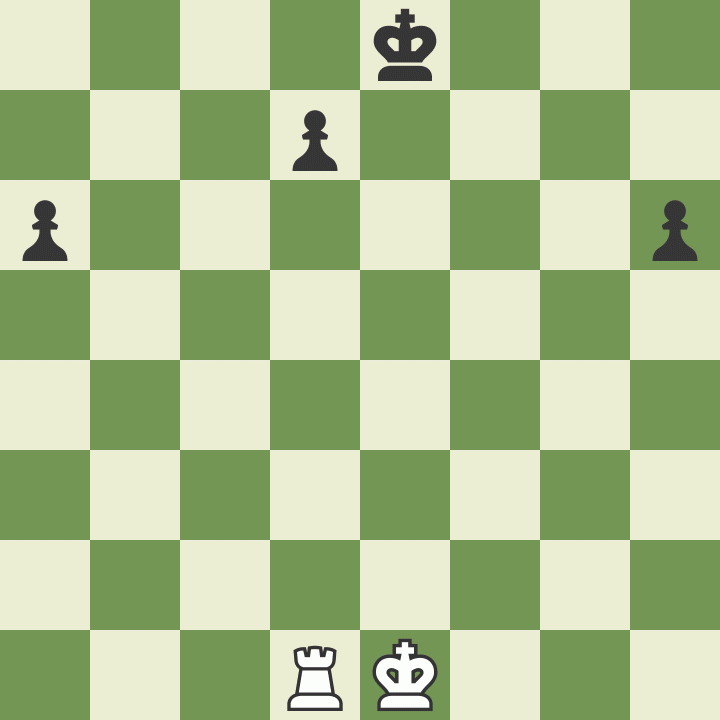
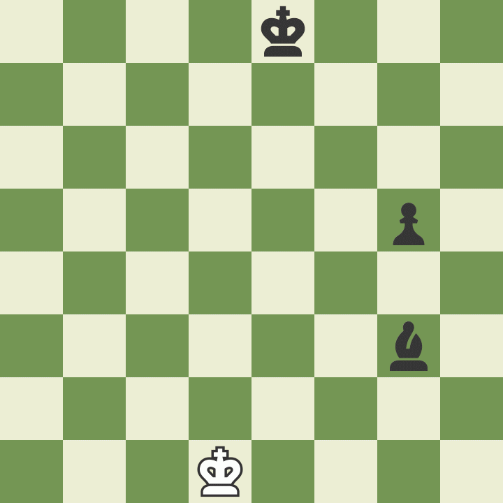
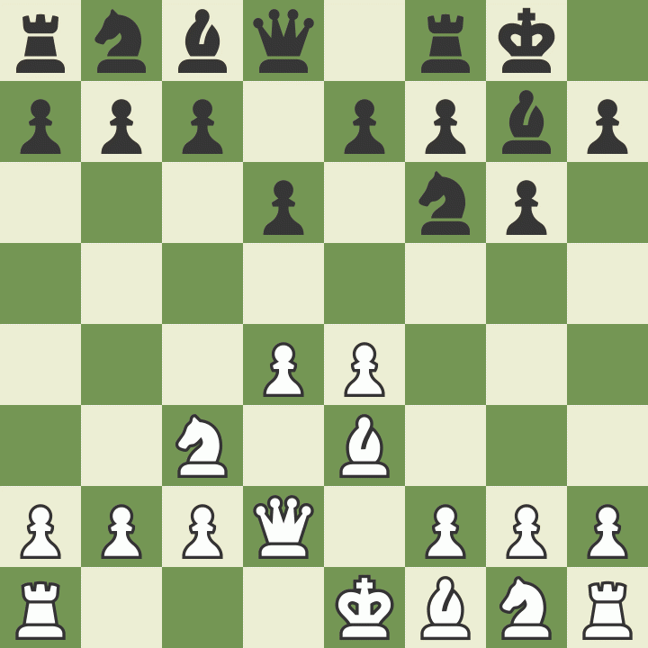

História
O xadrez é um dos jogos mais antigos e mais famosos da história, sua primeira versão se originou na Índia, no século VI e se chamava “Chaturanga” (esse estilo pode ser jogado no site chess.com), cada tipo de peça representava um tipo de tropa do exército indiano e tinha peças e movimentos difernetes do xadrez atual, que surgiu no sudeste europeu, na segunda metade do século XV.
A variante européia se tornou padrão devido à adição dos bispos (que substituíram os elefantes) e da dama (que substituiu o general, também chamado de ministro), foi ainda no final do século XV que começaram a surgir as primeiras análises de aberturas por conta das novas variações de jogadas.
Como jogar
Cada jogador assume o controle das peças de uma cor, sendo que o jogador de brancas sempre
inicia o jogo.
O xadrez é um jogo de turnos, ou seja, um jogador só pode fazer um lance depois de outro.
O xadrez é um jogo de turnos, ou seja, um jogador só pode fazer um lance depois de outro.

Como movimentar as peças
Peão


Exemplo de movimentação dos peões (Defesa Francesa: Variante do avanço adaptada)

Bispo


Cavalo

Torre


Dama


Rei


Movimentos Especiais
Roque
O roque é muito importante e deve ser feito o mais rápido possível, pois move duas peças em um só lance (Rei e a Torre) e ainda protege o rei.Para que ele possa ser feito o caminho entre o rei e a torre (de qualquer lado) deve estar vazio e sem ameaças.


